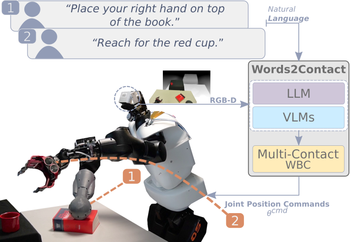

This paper presents Words2Contact, a language- guided multi-contact placement pipeline leveraging large language models and vision language models. Our method is a key component for language-assisted teleoperation and human-robot cooperation, where human operators can instruct the robots where to place their support contacts before whole-body reaching or manipulation using natural language. Words2Contact transforms the verbal instructions of a human operator into contact placement predictions; it also deals with iterative corrections, until the human is satisfied with the contact location identified in the robot’s field of view. We benchmark state-of-the-art LLMs and VLMs for size and performance in contact prediction. We demonstrate the effectiveness of the iterative correction process, showing that users, even naive, quickly learn how to instruct the system to obtain accurate locations. Finally, we validate Words2Contact in real-world experiments with the Talos humanoid robot, instructed by human operators to place support contacts on different locations and surfaces to avoid falling when reaching for distant objects.
